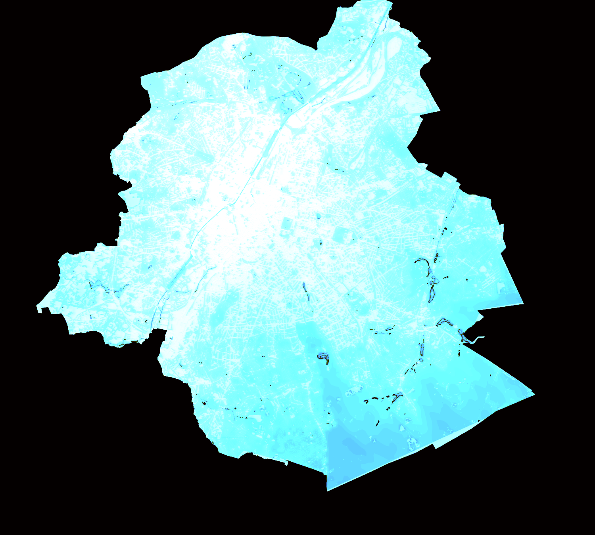

Trees & Surfaces
An exploratory view of sampled managed trees: where do higher WBGT pixels coincide with closer bicycle counters?
Interpretation boundary: the signal uses one 2016 heat raster and counter proximity. It is not a street-use measure or an intervention recommendation.
Loading public-source snapshot…
Exploratory lens
Change the weights to see how the descriptive signal changes.
The score normalises the weights automatically. Counter proximity is used only as a spatial context proxy; it does not measure pedestrian or bicycle flow.
Observed tree points
Relative geographic preview of the ranked points; no basemap or street geometry is implied.
lower exploratory signalhigher exploratory signal
| Tree point | Heat pixel | Nearest counter | Distance | Signal |
|---|
Public register preview
Loading records…
